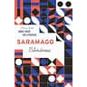
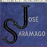
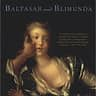
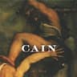

1.
Ensaio sobre a Cegueira (1995): Uma epidemia de cegueira atinge uma cidade inteira, explorando a fragilidade da civilização e a natureza humana em situações extremas.

2.
O Evangelho Segundo Jesus Cristo (1991): - Esta é a única obra que Fernando Pessoa publicou em vida.

3. Memorial do Convento (1982):Mistura história e ficção, narrando a construção do Convento de Mafra e a história de Baltasar e Blimunda, com elementos fantásticos como a passarola

4. Caim (2009): Última obra publicada, que revisita episódios bíblicos com ironia e questionamento moral.